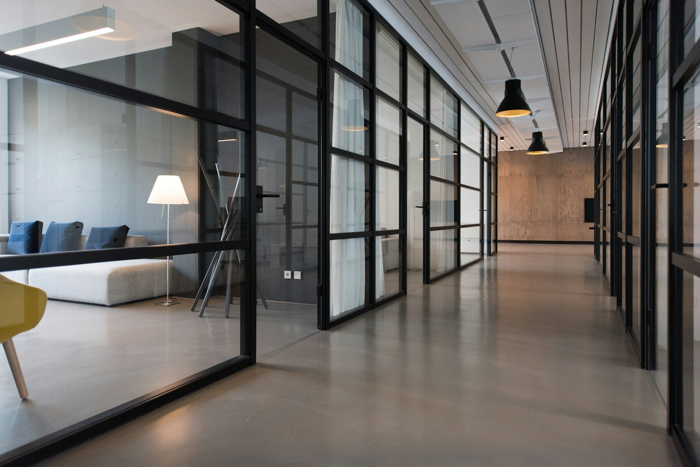

Camera
Bật camera để chụp ảnh hoặc quay video.

Camera chưa bật
Bật camera và cấp quyền truy cập khi trình duyệt yêu cầu để bắt đầu.
Bật camera để sử dụng nút chụp và quay.
Vừa ghi lại
0Ảnh chụp và clip quay sẽ tự động xuất hiện tại đây.
Thư viện
Ảnh và video đã lưu trữ cục bộ trong trình duyệt máy tính.
Cài đặt
Thông tin lưu trữ, tính năng bảo mật và phiên bản ứng dụng.
Lưu trữ cục bộ
Ảnh và video được lưu trữ bằng cơ sở dữ liệu IndexedDB của trình duyệt. Dữ liệu này độc lập trên mỗi cấu hình trình duyệt và không chia sẻ ra ngoài.
Bảo mật & Quyền riêng tư
Dòng dữ liệu hình ảnh và âm thanh được xử lý hoàn toàn cục bộ trên máy tính của bạn. Không gửi bất kỳ dữ liệu đa phương tiện nào lên máy chủ bên ngoài.
Khi không sử dụng, nhấn nút tắt camera hoặc đóng tab trình duyệt để giải phóng hoàn toàn thiết bị quang học và micro.
Lộ trình Flip Studio
Flip Studio v0.1 · Kiến trúc độc lập cho Linux
Hướng dẫn & Trợ giúp
Cách thức sử dụng và giải đáp các câu hỏi thường gặp.
Làm sao để bật và cấp quyền camera?
Nhấn “Bật camera” ngay tại khung xem hoặc nhấn “Chọn thiết bị”. Trình duyệt sẽ hiển thị thông báo hỏi cấp quyền; hãy chọn “Cho phép”. Nếu cần thu âm cùng video, hãy tích chọn micro trước khi kết nối.
Chế độ ảnh mẫu hoạt động như thế nào?
Khi chưa có camera hoặc muốn thử nghiệm giao diện, bạn có thể nhấn “Xem thử với ảnh mẫu”. Hệ thống sẽ nạp ảnh mẫu chuẩn studio để bạn thử chụp và làm quen với bộ sưu tập thư viện.
Ảnh và video được lưu trữ ở đâu?
Tất cả tệp được lưu trong bộ nhớ IndexedDB của trình duyệt trên máy tính. Bạn có thể nhấn “Tải tất cả (ZIP)” hoặc mở từng tệp để tải về thư mục Downloads của hệ điều hành.
Kết nối với điện thoại Galaxy Z Flip3 thế nào?
Để xem camera an ninh từ Samsung Galaxy Z Flip3 qua mạng nội bộ HTTPS, mở mục “Camera giám sát” ở thanh điều hướng bên trái, sau đó nhập địa chỉ IP cổng 8443 được cấp từ app Flip Camera.
Sự cố camera không mở được hoặc báo lỗi?
Kiểm tra xem ứng dụng khác (Zoom, Teams, OBS) có đang chiếm giữ webcam hay không. Nếu lỗi micro, hãy thử tắt tùy chọn thu âm trước khi bật lại camera.